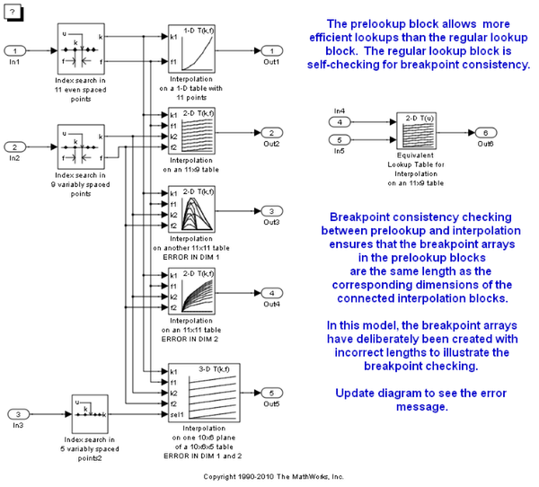
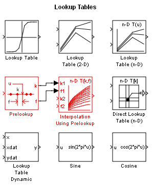
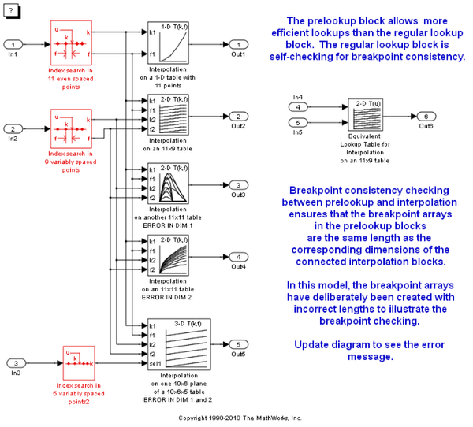
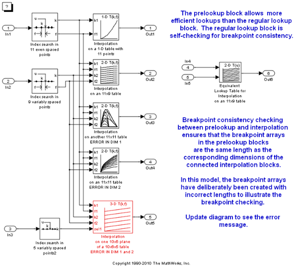

Using the Prelookup and Interpolation Blocks
The Prelookup block allows you to minimize the number of index searches performed across a set of look-up tables and also to mix clipping, extrapolation, and index search algorithms within one table calculation.
Contents
Introduction
This model uses Prelookup and Interpolation Using Prelookup blocks. Note how the Prelookup blocks perform the index search portion of the computation and the Interpolation Using Prelookup blocks perform the rest:
These blocks can be found in the Simulink® block library in the Lookup Tables sub-library:
Optimization: PreLookup + Interpolation Using Prelookup Blocks
Use of the PreLookup block should be considered for tables with intensive index searches in breakpoint sets. The Prelookup blocks allow you to perform an index search once and reuse the result in many table lookups. In this model, 3 index search results are used in 5 blocks in a total of 10 uses. Equivalent regular lookup tables such as the example to the right would have required 10 index searches instead of 3.
Optimization: Sub-table selection option in the Interpolation Using Prelookup Blocks
One of the Interpolation blocks in this model is configured using a capability: trailing dimensions of an n-D table can be marked as "selection dimensions", meaning that the input for that dimension is an integer used only to make a sub-table selection, such as picking a 2-D plane from a 3-D table. The sub-table is then interpolated normally.
Interpolation of sub-tables can save tremendous amounts of computation. For every dimension eliminated from interpolation, the computation almost halves. Since an N-dimensional interpolation takes (2^N)-1 individual interpolation operations (y? = ylow + f*(yhigh-ylow)), even just one dimension of selection can almost double the speed of the interpolation. Extreme example: a 5-D table with 3 dimensions of sub-table selection and 2-D interpolation: 5-D interpolation would take 2^5-1 = 31 interpolations, but a 2-D interpolation takes only 2^2 - 1 = 3.
The selection ports support vectorization to allow multiple sub-table selection / interpolations in a single block.
The sub-table or multi-table mode of operation is activated by setting a positive integer for the Number of sub-table selections dimensions parameter in the block's parameter dialog. The number you set is interpreted as the number of dimensions to select from the highest dimensions. For example, if you have a 3-D table and choose 2, that means the first dimension will be interpolated and dimensions 2 and 3 will be selected:
NOTE: you can remove highlighting from a model using the View / Remove highlighting menu item or this command:
set_param(mdl,'HiliteAncestors','none')
Breakpoint and Table Data Consistency Checking
Using Prelookup and Interpolation Using Prelookup blocks introduces a need to ensure that the length of the 'Breakpoint data' parameter in the Prelookup blocks matches the corresponding dimension of the 'Table data' parameter in the connected Interpolation Using Prelookup blocks. Simulink always checks the consistency between the two blocks when updating the block diagram. Simulink reports errors if it encounters inconsistent breakpoint and table data. For example:
try
evalc(['sim(', mdl, ')']);
catch E
disp(['Error:', E.message]);
endError:The range of values for input port k2 of block 'sldemo_bpcheck/Interpolation on an 11x11 table ERROR IN DIM 2 ' does not match the size of the corresponding table dimension.